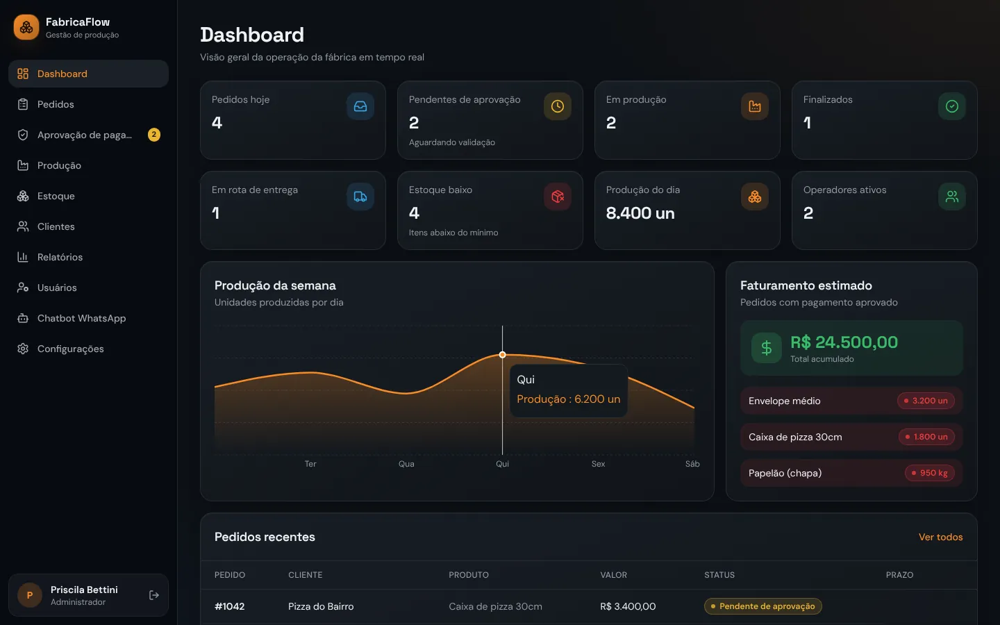

Software de gestão industrial automatizado
Gestão industrial automatizada, do pedido à entrega
O pedido entra pelo sistema ou pelo chatbot de WhatsApp, passa pela aprovação do pagamento, vai para a fila do setor certo e avisa quem precisa saber. Tudo registrado, para fábricas de papel, embalagens, móveis, metalurgia e indústrias de processo. Menos digitação e menos planilha paralela.
- Papelão ondulado
- Papel cartão
- Papel e tissue
- Móveis e marcenaria
- Metalurgia e serralheria
- Plásticos
- Química
- Alimentos

O problema
Onde a operação manual perde dinheiro
Quando pedido, produção e estoque vivem em conversas, planilhas e papel, o erro aparece no pior lugar: na máquina parada ou no cliente insatisfeito.
Pedidos perdidos
Mensagens espalhadas no WhatsApp, sem registro nem histórico confiável.
Controle em papel e planilha
Anotações e planilhas manuais geram erro de digitação e retrabalho.
Estoque desatualizado
Ninguém vê o saldo real. O material acaba e a produção para.
Cliente sem notícia
Sem aviso automático, o cliente liga cobrando e a equipe para para responder.
Quanto custa esperar
Faça a conta da sua fábrica
O custo da desorganização não aparece no balanço, mas está em toda semana de operação. Preencha com os números da sua operação. A conta fica só no seu navegador.
Cada mês sem controle repete essas perdas. A plataforma se paga no momento em que evita a primeira parada de máquina ou o primeiro pedido perdido.
A solução
Um sistema para toda a operação
Pedido, produção, estoque e clientes em um único sistema, no computador e no celular, atualizado em tempo real.
-
Pedido sem retrabalho
Cliente, produto, prioridade e setor sugerido pelo catálogo. Também por texto ou áudio no chatbot de WhatsApp.
-
Produção por setor
Cada setor vê a própria fila, com os urgentes primeiro, e imprime a ficha do pedido em PDF.
-
Estoque com alerta
Saldo de cada material, alerta quando chega no mínimo e o contato do fornecedor no cadastro.
-
Clientes e tempo real
Histórico de compra de cada cliente e telas que se atualizam sozinhas para gestor, vendedor e operador.
Para quem é
Gestão industrial para quem recebe pedido, produz e entrega
Se a sua fábrica recebe pedidos por qualquer canal, produz por setor e controla estoque de algum material, o FábricaFlow se adapta à sua rotina.
Papel e embalagens
Papelão ondulado, papel cartão, tissue, caixas e envelopes.
Móveis e marcenaria
Móveis planejados, corporativos, marcenaria sob medida e estofados.
Metalurgia e serralheria
Estruturas metálicas, esquadrias, usinagem e caldeiraria.
Outras indústrias
Plásticos, química, alimentos e outras operações sob encomenda.
Como funciona
O caminho de um pedido, em 8 etapas
Cada etapa é validada antes da próxima. Nenhum pedido entra em produção sem pagamento aprovado.
- 1
Pedido lançado
Pela equipe no sistema ou por texto e áudio no chatbot de WhatsApp.
- 2
Setor e prioridade
O catálogo sugere o setor que produz; a prioridade define a ordem.
- 3
Comprovante anexado
O comprovante do pagamento fica guardado no próprio pedido.
- 4Decisão humana
Pagamento aprovado
Quem tem permissão confere e aprova em um clique.
- 5
Fila do setor certo
O pedido liberado entra na fila, com os urgentes primeiro.
- 6
Ficha para a produção
Ficha em PDF, sem valores, para imprimir e conferir.
- 7
Produção acompanhada
O operador atualiza pelo celular e todos veem na hora.
- 8
Cliente avisado
Mensagem pronta a cada etapa, enviada com um toque.
Automático, sem digitaçãoDecisão humana, com controle
Chatbot de WhatsApp
Lance o pedido por mensagem, do jeito que a equipe já conversa
- A vendedora manda texto ou áudio com o pedido
- O chatbot entende cliente, produto, quantidade, prazo e prioridade, sugere o setor e pede confirmação
- Com o pagamento conferido, o pedido vai direto para a fila da produção, com o nome de quem lançou
- Consulta a situação de qualquer pedido pelo número
- Só números cadastrados da fábrica, cada um com as permissões do seu perfil
- Gestores recebem alerta de pedido urgente e de insumo abaixo do mínimo, com o contato do fornecedor
- Na implantação, sua fábrica ganha um número de WhatsApp próprio com o chatbot, chip incluso na mensalidade
Chatbot FábricaFlow · WhatsApp
A Padaria das Flores pediu 50 caixas de pizza 35 cm para sexta. Urgente.
Pedido: Padaria das Flores · 50 caixas de pizza 35 cm · entrega sexta · prioridade Urgente · setor Corte e vinco. O pagamento já foi conferido?
Sim, já conferi o Pix.
Pedido #1482 registrado e enviado para a fila do setor. Os gestores foram avisados.
Alerta no WhatsApp do gestor
Pedido URGENTE #1482 lançado por Ana: Padaria das Flores, entrega sexta.
Demonstração narrada
Veja o fluxo completo em menos de 2 minutos
Do pedido à entrega, passando pela aprovação do gestor, pela fila de produção e pelo estoque.
1min52s, com áudio.
Telas reais
O que o gestor e a equipe veem no dia a dia
Toque em cada tela para ver o que ela resolve.
Os dados nas telas são de demonstração. Produtos, setores, materiais e mensagens são configurados para a sua fábrica.
Setores que configuramos conforme a sua fábrica
- Onduladeira
- Impressão
- Corte e vinco
- Colagem
- Máquina de papel
- Corte CNC e seccionadora
- Usinagem
- Corte, dobra e solda
- Pintura
- Montagem
- Extrusão
- Mistura e envase
- Expedição
O que muda
Antes e depois da plataforma
Implantação
Implantação acompanhada, sem parar a fábrica
O prazo depende do tamanho e da rotina de cada operação. A média ideal é de 2 meses, já incluindo a operação assistida.
- Fase 1
Diagnóstico
Mapeamos como o pedido entra, como a produção é organizada, quais setores existem e quais materiais controlar.
- Fase 2
Configuração
Configuramos setores, catálogo de produtos, materiais, estoques mínimos, usuários e perfis. Treinamos gestores, vendedores e operadores.
- Fase 3
Operação assistida
A plataforma entra no dia a dia com o nosso acompanhamento próximo, ajustando o que for preciso até a equipe ganhar autonomia.
Investimento
Condição especial de lançamento
Para as 3 primeiras fábricas
Implantação completa
R$ 600 90% de desconto sobre o valor padrão de R$ 6.000
Inclui diagnóstico, configuração, treinamento e operação assistida. Condição de lançamento para as 3 primeiras fábricas que contratarem, confirmada na proposta por escrito.
Quero a demonstração- Mensalidade
- A combinarDefinida conforme o porte da operação, o número de usuários e os setores atendidos.
- Prazo de implantação
- Média de 2 mesesVaria conforme a operação. Inclui a fase de operação assistida.
- Próximo passo
- Demonstração de 20 minutosPor vídeo, mostrando o fluxo aplicado à rotina da sua fábrica.
Perguntas frequentes
Dúvidas sobre a plataforma de gestão industrial
O que é o FábricaFlow?
O FábricaFlow é um software de gestão industrial automatizado para fábricas que recebem pedidos, produzem e entregam. O pedido entra pelo sistema ou pelo chatbot de WhatsApp da fábrica, passa pela aprovação do pagamento, vai para a fila do setor certo, avisa quem precisa saber e fica registrado. Menos digitação e menos planilha paralela.
O FábricaFlow tem relação com o fabricaflow.com?
Não. O FábricaFlow (fabricaflow.online) é uma plataforma brasileira de gestão industrial da I.F.A. Bergara Tecnologia, CNPJ 47.035.146/0001-36, de São Paulo/SP. O fabricaflow.com é um software estrangeiro, sem relação com a nossa empresa.
Para que tipo de fábrica o FábricaFlow serve?
Para qualquer indústria que siga o fluxo pedido, produção e entrega e que precise controlar estoque de materiais ou produtos: papel e embalagens, papelão ondulado, móveis e marcenaria, metalurgia e serralheria, plásticos, química e alimentos, entre outras. Setores, materiais e mensagens são configurados para a rotina de cada fábrica.
O FábricaFlow substitui o ERP?
Não precisa substituir. A empresa contrata só os módulos que fazem sentido: quem já tem ERP costuma usar o FábricaFlow para produção, estoque e avisos ao cliente, enquanto o ERP continua emitindo a nota fiscal. A integração com ERPs como Bling e Omie é feita sob demanda na implantação.
Quais módulos a plataforma tem?
Pedidos com prioridade e catálogo de produtos, chatbot de WhatsApp para lançar e consultar pedidos, aprovação de pagamento, produção por setor em kanban, ficha do pedido em PDF, clientes com histórico de compra, estoque com alerta de mínimo e fornecedor, relatórios, mensagens ao cliente e importação de clientes e produtos por planilha. Os perfis de acesso são administrador, gestor, vendedor e operador. Cada empresa ativa apenas os módulos que usa.
Dá para ver quais clientes estão sem comprar?
Sim. Cada cliente mostra a data do último pedido, o total de pedidos, os pedidos dos últimos 90 dias e a frequência média de compra. Dá para ordenar a lista por quem está há mais tempo sem pedir e saber quem procurar.
Como funciona o pedido pelo WhatsApp?
Na implantação, a fábrica ganha um chatbot de WhatsApp com número próprio. A vendedora manda texto ou áudio com o pedido; o chatbot entende cliente, produto, quantidade, prazo e prioridade, sugere o setor pelo catálogo, mostra o resumo e pede confirmação. Com o pagamento conferido, o pedido vai para a fila da produção, registrado com o nome de quem lançou. Também dá para consultar a situação de um pedido pelo número.
Preciso de um número de WhatsApp novo para o chatbot?
Não precisa providenciar. Na implantação, cada fábrica recebe um número dedicado do chatbot, com o chip incluso na mensalidade. O WhatsApp de atendimento da empresa continua separado.
Qualquer pessoa pode lançar pedido pelo WhatsApp?
Não. O chatbot só atende os números cadastrados como usuários da fábrica, e cada um tem as permissões do seu perfil: o operador, por exemplo, só consulta.
Nenhum pedido vai para a produção sem pagamento?
Isso mesmo. O pedido só entra na fila da produção depois que o pagamento é aprovado por quem tem permissão. No chatbot de WhatsApp, isso acontece quando quem lança confirma que o pagamento foi conferido; se não, o pedido fica aguardando pagamento. Cada mudança de situação fica registrada no histórico do pedido.
Precisa instalar alguma coisa?
Não. O FábricaFlow funciona no navegador, no computador e no celular, e as telas se atualizam sozinhas quando alguém mexe em um pedido. Gestores, vendedores e operadores entram com o próprio usuário e veem apenas o que o perfil deles permite.
Quanto tempo leva a implantação?
A média é de 2 meses, já incluindo a operação assistida. São três fases: diagnóstico da operação, configuração e treinamento, e acompanhamento próximo no dia a dia até a equipe ganhar autonomia.
Quanto custa o FábricaFlow?
A mensalidade é definida conforme o porte da operação, o número de usuários e os módulos contratados. Na condição de lançamento, as 3 primeiras fábricas que contratarem têm 90% de desconto na implantação completa: R$ 600 em vez de R$ 6.000.
Os dados da minha fábrica ficam seguros?
Sim. Os dados ficam em servidores no Brasil (São Paulo), cada empresa só enxerga os próprios dados e o acesso é separado por perfil (administrador, gestor e operador). A plataforma foi pensada para atender à LGPD.
Vamos conversar
Veja a plataforma funcionando na rotina da sua fábrica
Em 20 minutos, por vídeo, mostramos o fluxo completo, do pedido à entrega, e avaliamos juntos se faz sentido para a sua operação.